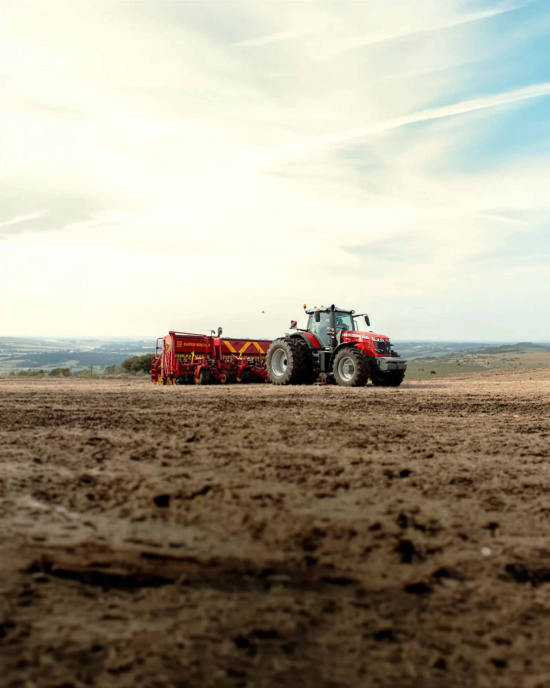
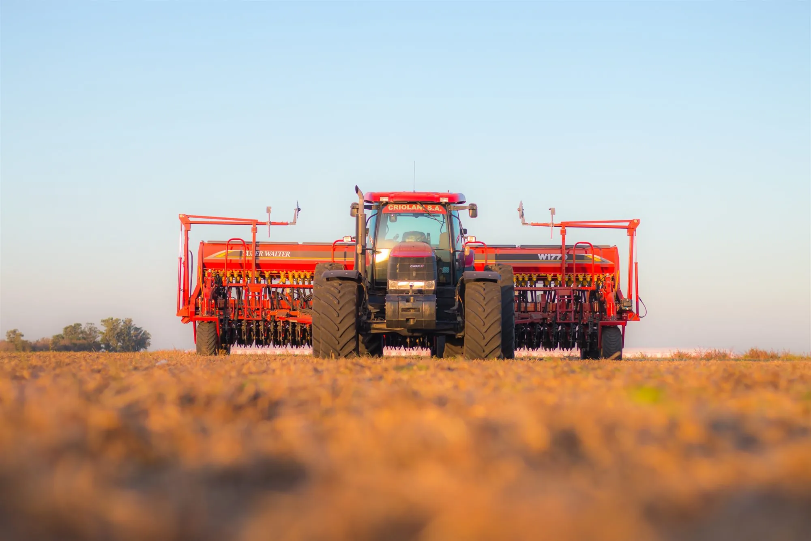
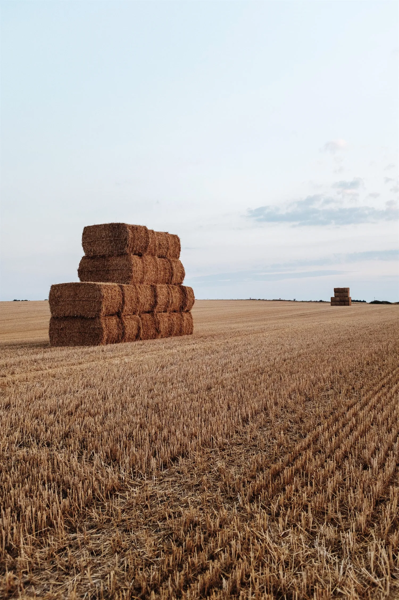
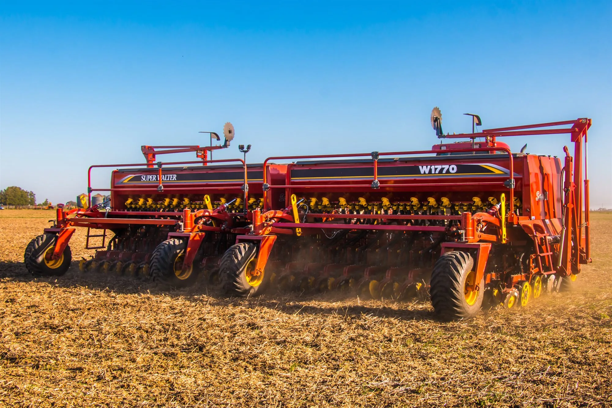

Diseño e ingeniería
Cada equipo parte de un desarrollo propio, pensado sobre las condiciones reales del suelo argentino.
Inicio · Empresa
La empresa · Búfalo S.A.
Desde 1957 somos una empresa orgullosamente familiar, líder en la innovación de implementos para el laboreo de la tierra y la siembra. Fabricamos en Las Parejas, Santa Fe, y nuestras máquinas trabajan en once países.
Quiénes somos · 01
Nuestra misión primordial es fabricar maquinaria con la tecnología más avanzada y la más alta calidad, en beneficio de nuestros campos y de quienes los cultivan.
Desde la década del 60 crecimos sin parar: pasamos de fabricar sembradoras de diseño propio a producir rastras, arados de discos y arados de rejas. Hoy somos Super Walter, parte de Búfalo S.A., una de las empresas líderes en la fabricación de implementos agrícolas de la Argentina.
Cada máquina que sale de nuestra planta tiene un objetivo claro: que aproveches mejor cada semilla, cada metro y cada kilo de fertilizante. Así entendemos la precisión.
Super Walter en números
Cómo trabajamos · 02

Desarrollamos nuestras máquinas desde cero, pensadas sobre las condiciones reales del suelo argentino.
Controles en cada etapa del proceso y certificación CE para operar en el mercado europeo.
Agricultura de precisión, corte por sección y monitoreo: tecnología que se mide en el lote.
Trato directo, decisiones rápidas y una red que conoce tu zona y te acompaña de verdad.

Nuestra planta
Acá el acero se vuelve máquina.
Historia y legado · 03

Nace el proyecto familiar que daría forma a Super Walter, con la mirada puesta en la mecanización del agro argentino.
Del diseño propio de sembradoras pasamos a fabricar rastras, arados de discos y arados de rejas.
La marca se integra a un grupo industrial que combina tradición, ingeniería e innovación.
Super Walter obtiene la certificación CE y abre la puerta al mercado europeo.
Uno de los principales fabricantes de implementos agrícolas del país, con más de 10.000 unidades vendidas.
Del acero al lote · 04

Cada equipo parte de un desarrollo propio, pensado sobre las condiciones reales del suelo argentino.
Corte, plegado y armado en nuestra planta, con controles de calidad en cada etapa.
Validamos cada innovación donde importa: sembrando de verdad, en el lote, midiendo resultados.
Puesta en marcha, capacitación y soporte técnico continuo junto a la red de concesionarios.
Alcance internacional · 05
Nuestras máquinas trabajan en suelos y climas muy distintos al nuestro. La misma ingeniería, la misma exigencia, en cada campaña.
Hablemos de tu próxima campaña
Un asesor de fábrica te contacta directo, sin importar en qué provincia estés.
Solicitar asesoramiento